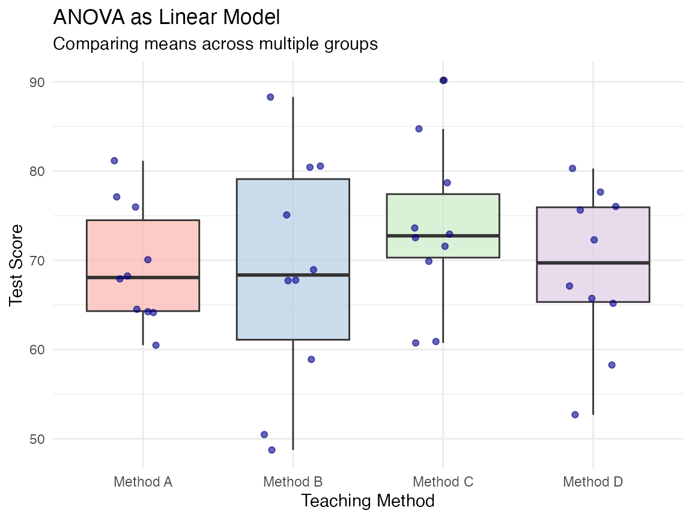

Connecting the Dots: The General Linear Model
Why Do We Need So Many Statistical Tests?
Statistical tests we’ve learned:
- t-tests (one-sample, independent, paired)
- ANOVA (one-way, two-way)
- Correlation
- Regression
But do we really need separate methods for each question?
The Big Idea: Everything is Connected!
Statistical tests aren’t separate techniques - they’re variations of the same framework:
- t-test is a special case of regression
- ANOVA is a special case of regression
- Correlation is related to regression
The Building Blocks: Variables and Relationships
Variables:
- Outcome (y): What we’re trying to understand
- Predictors (x): Factors that might explain the outcome
Relationships:
- Is there a relationship between x and y?
- How strong is this relationship?
- Is the relationship statistically significant?
The General Linear Model: The Basic Formula
The general linear model can be written as:
\[y = b_0 + b_1 x_1 + b_2 x_2 + ... + \text{error}\]
Where:
- \(y\) is the outcome
- \(b_0\) is the intercept (value of y when all predictors are 0)
- \(b_1, b_2, etc.\) are coefficients (effects of predictors)
- \(x_1, x_2, etc.\) are predictor variables
- error is what the model doesn’t explain
This simple formula can be adapted to represent many different statistical tests!
Example 1: One-Sample t-test as a Linear Model
One-sample t-test: Tests if a sample mean differs from a known value
As a linear model: \[y = b_0 + \text{error}\]
Where:
- \(b_0\) is the sample mean
- We test whether \(b_0 = \mu_0\) (the test value)
Example: Testing if average test scores (70) differ from the expected value (65)
Example 2: Independent t-test as a Linear Model
Independent t-test: Compares means between two groups
As a linear model: \[y = b_0 + b_1 x_1 + \text{error}\]
Where:
- \(x_1\) is a binary group indicator (0/1)
- \(b_0\) is the mean for group 0
- \(b_1\) is the difference between groups
- We test whether \(b_1 = 0\)
Example: Comparing male vs. female test scores
Example 3: ANOVA as a Linear Model
ANOVA: Compares means across multiple groups
As a linear model: \[y = b_0 + b_1 x_1 + b_2 x_2 + ... + \text{error}\]
Where:
- \(x_1, x_2, etc.\) are group indicators
- \(b_0\) is the mean for the reference group
- \(b_1, b_2, etc.\) are differences from reference
- We test whether all \(b_i = 0\)
Example: Comparing test scores across different teaching methods

Example 4: Regression as a Linear Model
Regression: Predicts an outcome based on continuous variables
As a linear model: \[y = b_0 + b_1 x_1 + b_2 x_2 + ... + \text{error}\]
Where:
- \(x_1, x_2, etc.\) are continuous predictors
- \(b_0\) is the y-intercept
- \(b_1, b_2, etc.\) are slopes for each predictor
- We test whether each \(b_i ≠ 0\)
Example: Predicting test scores based on study hours and previous grades
A Unified Approach: Common Structure of Statistical Tests
| Test | Formula | What’s being tested |
|---|---|---|
| One-sample t-test | y ~ 1 | Is the intercept equal to a specific value? |
| Independent t-test | y ~ group | Is there a difference between groups? |
| One-way ANOVA | y ~ group | Are there differences between any groups? |
| Multiple regression | y ~ x1 + x2 + … | Do the predictors affect the outcome? |
The core insight: Despite their different names and applications, these tests all use the same underlying model - they just differ in what predictors are included and what questions are asked.
Real Example: HR Analytics with the General Linear Model
Let’s apply the general linear model to a real HR dataset to answer these questions:
- Does average salary differ from the industry standard? (One-sample t-test)
- Is there a gender difference in salaries? (Independent t-test)
- Do salaries differ across job roles? (ANOVA)
- What factors predict salary? (Multiple regression)
Question 1: One-sample t-test in HR Analytics
Question: Is the average salary grade at our company (30.3) different from the industry standard (30)?
As a linear model: \[\text{salary} = b_0 + \text{error}\]
One Sample t-test
data: hr_data$salarygrade
t = -778.39, df = 935, p-value < 2.2e-16
alternative hypothesis: true mean is not equal to 30
95 percent confidence interval:
2.022589 2.163309
sample estimates:
mean of x
2.092949
Call:
lm(formula = salarygrade ~ 1, data = hr_data)
Residuals:
Min 1Q Median 3Q Max
-1.09295 -1.09295 -0.09295 0.90705 2.90705
Coefficients:
Estimate Std. Error t value Pr(>|t|)
(Intercept) 2.09295 0.03585 58.38 <2e-16 ***
---
Signif. codes: 0 '***' 0.001 '**' 0.01 '*' 0.05 '.' 0.1 ' ' 1
Residual standard error: 1.097 on 935 degrees of freedomQuestion 2: Independent t-test in HR Analytics
Question: Is there a gender difference in salary grades?
As a linear model: \[\text{salary} = b_0 + b_1 \text{gender} + \text{error}\]
Two Sample t-test
data: salarygrade by gender
t = -6.1215, df = 934, p-value = 1.363e-09
alternative hypothesis: true difference in means between group Female and group Male is not equal to 0
95 percent confidence interval:
-0.5745942 -0.2956135
sample estimates:
mean in group Female mean in group Male
1.906542 2.341646
Call:
lm(formula = salarygrade ~ gender, data = hr_data)
Residuals:
Min 1Q Median 3Q Max
-1.3417 -0.9065 -0.3417 0.6583 3.0935
Coefficients:
Estimate Std. Error t value Pr(>|t|)
(Intercept) 1.90654 0.04652 40.981 < 2e-16 ***
genderMale 0.43510 0.07108 6.122 1.36e-09 ***
---
Signif. codes: 0 '***' 0.001 '**' 0.01 '*' 0.05 '.' 0.1 ' ' 1
Residual standard error: 1.076 on 934 degrees of freedom
Multiple R-squared: 0.03857, Adjusted R-squared: 0.03754
F-statistic: 37.47 on 1 and 934 DF, p-value: 1.363e-09Question 3: ANOVA in HR Analytics
Question: Do salary grades differ across job roles?
As a linear model: \[\text{salary} = b_0 + b_1 \text{role}_1 + b_2 \text{role}_2 + ... + \text{error}\]
Df Sum Sq Mean Sq F value Pr(>F)
job_role 7 996.9 142.41 1032 <2e-16 ***
Residuals 928 128.1 0.14
---
Signif. codes: 0 '***' 0.001 '**' 0.01 '*' 0.05 '.' 0.1 ' ' 1Analysis of Variance Table
Response: salarygrade
Df Sum Sq Mean Sq F value Pr(>F)
job_role 7 996.86 142.408 1032 < 2.2e-16 ***
Residuals 928 128.06 0.138
---
Signif. codes: 0 '***' 0.001 '**' 0.01 '*' 0.05 '.' 0.1 ' ' 1Question 4: Multiple Regression in HR Analytics
Question: What factors predict salary grades?
As a linear model: \[\text{salary} = b_0 + b_1 \text{gender} + b_2 \text{experience} + b_3 \text{performance} + \text{error}\]
# Multiple regression model
salary_model <- lm(salarygrade ~ gender + tenure + evaluation,
data = hr_data)
summary(salary_model)
Call:
lm(formula = salarygrade ~ gender + tenure + evaluation, data = hr_data)
Residuals:
Min 1Q Median 3Q Max
-2.0857 -0.6864 -0.1031 0.6190 3.0612
Coefficients:
Estimate Std. Error t value Pr(>|t|)
(Intercept) 0.846267 0.092849 9.114 < 2e-16 ***
genderMale 0.379056 0.059310 6.391 2.6e-10 ***
tenure 0.138921 0.007345 18.913 < 2e-16 ***
evaluation 0.107371 0.026086 4.116 4.2e-05 ***
---
Signif. codes: 0 '***' 0.001 '**' 0.01 '*' 0.05 '.' 0.1 ' ' 1
Residual standard error: 0.8968 on 932 degrees of freedom
Multiple R-squared: 0.3337, Adjusted R-squared: 0.3316
F-statistic: 155.6 on 3 and 932 DF, p-value: < 2.2e-16Visualizing the Multiple Regression Model

Why This Matters: Practical Benefits
Understanding statistical tests as variations of the general linear model has several benefits:
- Conceptual simplicity: Learn one framework instead of many isolated techniques
- Easier interpretation: Consistent approach to understanding results
- Increased flexibility: Combine different types of predictors in one model
- Clearer path to advanced methods: Makes advanced techniques more accessible
- Better research questions: Focus on relationships rather than “which test to use”
The Big Picture: Different Approaches to the Same Data
Statistical tests are just different lenses for viewing relationships in your data:
- t-tests: “Is there a difference between groups?”
- ANOVA: “Are there differences between multiple groups?”
- Regression: “How do predictors relate to the outcome?”
All ask questions about relationships between variables - and the general linear model provides a unified way to answer them.
Summary: The Unified Framework
- Many statistical tests are special cases of the general linear model
- The differences are in the types of predictors and specific hypotheses
- This unified framework simplifies learning and application
- It provides a foundation for understanding advanced statistical methods
- Focus on relationships and questions, not test selection
Further Resources
If you’d like to explore this topic further:
“Common statistical tests are linear models” by Jonas Kristoffer Lindeløv https://lindeloev.github.io/tests-as-linear/
Statistical Thinking for the 21st Century by Russell A. Poldrack, Chapters 10-11 https://statsthinking21.github.io/statsthinking21-core-site/
Our practical exercise will help you apply these concepts to real data